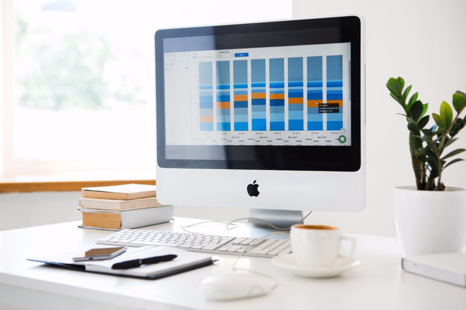

Landing pages
Una landing page no explica todo el negocio: quita el menú y las distracciones y deja solo lo necesario para que ocurra una acción. Es la página a la que conviene enviar el tráfico que paga en campañas.
Una landing page es una página con un único objetivo: que el visitante haga una cosa concreta. Pedir presupuesto, reservar una cita, dejar su teléfono o comprar. Nada más.
Se diferencia de la web corporativa en que no intenta explicar todo el negocio. Quita del medio todo lo que distrae, incluido el menú, y deja solo lo necesario para que esa acción ocurra.
Por eso es la página a la que conviene enviar el tráfico de una campaña de pago. Cada euro invertido en anuncios llega a una página hecha para esa campaña, no a una portada genérica donde el visitante se pierde.
En cifras
Qué incluye
Lo que entra en el servicio, sin letra pequeña.
Un solo mensaje
Definimos la oferta y la escribimos en un lenguaje claro, sin promesas vacías ni adornos que resten credibilidad.
Estructura de conversión
Orden pensado para acompañar al visitante: qué gana, por qué confiar, qué dudas resolver y dónde pulsar.
Formulario que llega
Formulario corto y revisado de punta a punta, con las solicitudes entrando en su correo y no en una carpeta de spam.
Preparada para medir
La página queda lista para conectarse con Google Ads o Meta y saber cuántas visitas se convierten en contactos.
Cómo trabajamos
Las fases por las que pasa el proyecto, y qué decide usted en cada una.
-
Objetivo y oferta
Definimos qué acción tiene que hacer el visitante y qué recibe a cambio. De ahí sale todo lo demás.
-
Redacción y diseño
Escribimos los textos y diseñamos la página sobre esa oferta concreta, no sobre una plantilla reutilizada.
-
Publicación y medición
Publicamos, comprobamos el formulario y dejamos la medición activa antes de que empiece la campaña.
-
Ajustes con datos
Con las primeras visitas se ve qué funciona. Ajustamos titular, orden o formulario según lo que digan los números.
De la estrategia al resultado.
Para quién es
Cuatro situaciones habituales. Si reconoce la suya, es que encaja.
- Quien va a invertir en publicidad
- Si va a pagar por cada visita en Google Ads o en redes, conviene que esa visita llegue a una página hecha para la campaña.
- Servicios que viven de las solicitudes
- Negocios que necesitan un flujo constante de peticiones de presupuesto, citas o reservas.
- Lanzamientos con fecha
- Un producto nuevo, una promoción o un evento que tiene un principio y un final y necesita su propia página.
- Clientes fuera de Barcelona
- Dentro o fuera de España. Una landing se plantea, se escribe y se mide igual de bien en remoto.
Preguntas frecuentes
Las dudas que nos llegan antes de empezar, respondidas sin rodeos.
¿En cuánto tiempo está lista?
Una landing page suele estar publicada en una o dos semanas, porque el trabajo se concentra en una sola página y en un solo mensaje.
¿Sirve para campañas de Google Ads?
Sí, es su uso más habitual. La página se prepara para recibir el tráfico de la campaña y para medir cuántas visitas acaban en contacto.
¿Necesito una para cada campaña?
No siempre, pero cuanto más se parezca la página al anuncio que ha traído al visitante, mejor funciona. Si tiene dos ofertas muy distintas, conviene una página para cada una.
¿Se pueden probar dos versiones?
Sí. Se puede publicar una segunda versión con otro titular u otra estructura y repartir el tráfico entre las dos para ver cuál convierte mejor.
¿Incluye la gestión de la campaña?
La página y la campaña son dos trabajos distintos. Podemos hacer solo la página, o encargarnos también de la publicidad. Se lo detallamos por separado en el presupuesto.
¿Trabajáis solo en Barcelona?
No. Tenemos la base en Barcelona y nos reunimos en persona aquí y en los alrededores, pero el trabajo se lleva igual de bien en remoto. Atendemos a clientes del resto de España y de fuera del país, en español, inglés y francés.
Hablemos de su proyecto.
Cuéntenos qué necesita su negocio. Le respondemos en menos de 24 horas con una propuesta concreta.
Solicitar una propuestaOtros servicios
El resto de servicios, por si el suyo necesita más de uno.